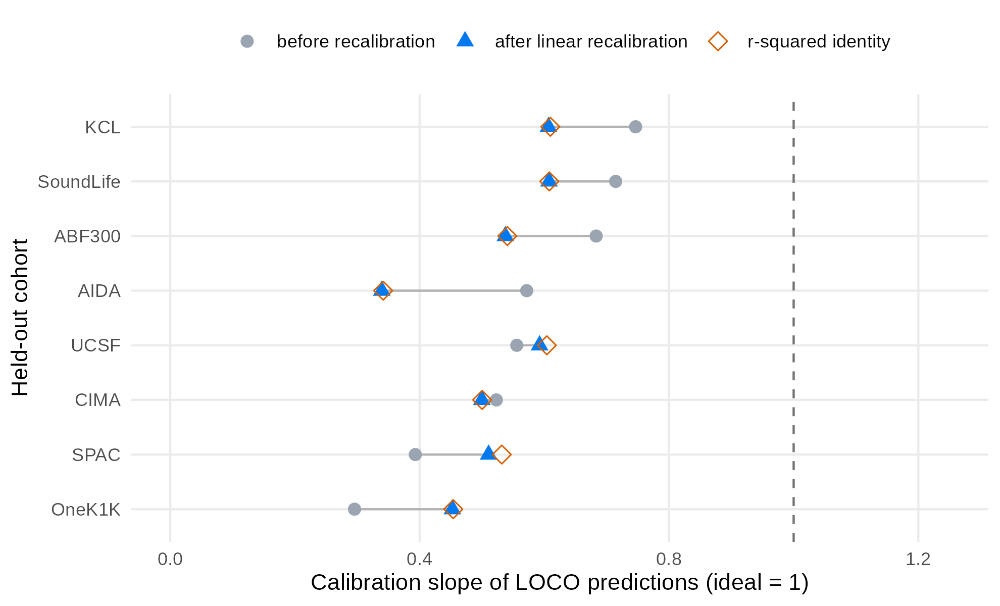

Case study: age-associated cell types across eight cohorts
Source:vignettes/stablr-aging-case-study.Rmd
stablr-aging-case-study.RmdSummary. We apply the
stablrenvironment-stability workflow to a public aging atlas. The atlas has 2,609 donors from eight scRNA-seq cohorts. The workflow finds 24 of 60 features that track age in every cohort. This full-atlas selection is exploratory. Per-cohort knockoff diagnostics (FDP+) are close to 1 on this atlas. The selection bar is therefore a descriptive reproducibility filter, not calibrated error control. Seven of eight age-associated cell types from the source publication pass the selection bar. All eight keep the same direction of effect in all cohorts. Models trained on seven cohorts predict age in the eighth cohort. The all-feature model reaches a mean absolute error of 6.7 to 15.6 years, depending on the held-out cohort. The selected-panel model uses features chosen with all eight cohorts. Its error is a post-selection estimate, not complete-pipeline held-out validation. A selection-isolated LOCO that re-selects inside each training partition gives a pooled error of 12.3 years. This vignette is an application case study. It is not calibration evidence for the method.
Contents
- 1 Background and aims
- 2 Data
- 3 Statistical methods
- 4 Result: features that track age in every cohort
- 5 Result: age prediction on held-out cohorts
- 6 Result: per-cohort recalibration
- 7 Discussion
- 8 Limits
- 9 Reproducibility
- References
1 Background and aims
A biomarker panel must work in new cohorts. A feature can track age in one cohort and fail in the next. Cohort differences in cell composition can cause this failure. Differences in sample processing can cause it too. Chance can also cause it.
The environment-stability workflow in stablr fits the
selection procedure in each cohort separately. It then keeps only the
features that pass the selection bar in all cohorts.
This case study asks two questions:
- Which cell-type features track age in the same direction in all eight cohorts?
- Do the selected features predict age in a cohort that the model did not see?
The analysis ran once with a fixed seed. The analysis script is
inst/benchmarks/ws8_aging_showcase.R in the package source.
The figures and statistics tables come from
inst/benchmarks/ws8_figures.R and
inst/benchmarks/ws8_recalibration.R. The pipeline takes
about 15 minutes. The post-review follow-up analyses add about one hour,
most of it the selection-isolated LOCO. This vignette shows the saved
results.
2 Data
2.1 Source and availability
The data come from a public healthy-aging PBMC atlas (Terekhova et
al. 2026, Immunity). The Artyomov lab single-cell portal
distributes the atlas (dataset
pan_atlas_healthy_aging_all_celtypes). We downloaded the
per-cell annotation table all_cells_metadata.csv.gz on
2026-10-13. The file has 13,137,775 cells (MD5
50651968855bf6ca3efcdf199e2a9fd5). Each row is one cell.
The columns include donor id, age, sex, CMV status, ancestry, cohort,
and cell-type annotation.
2.2 Cohorts
| Cohort | Donors |
|---|---|
| OneK1K | 981 |
| AIDA | 625 |
| CIMA | 421 |
| KCL | 188 |
| ABF300 | 166 |
| UCSF | 99 |
| SoundLife | 96 |
| SPAC | 33 |
| Total | 2609 |
The cohorts differ in size, ancestry mix, and age range. Cohort identity explains the largest share of variance in the atlas (Terekhova et al. 2026). This property makes the atlas a strong test for transportability.
2.3 Donor-level feature construction
Each donor is one sample. For each donor and each cell type, we compute a smoothed proportion: (count + 0.5) / (total + 0.5). We then apply the logit transform. This gives 59 cell-type features. One covariate (sex, coded Female = 1) joins the panel.
Three covariate columns are constant inside at least one cohort: CMV status and two ancestry indicators. The analysis drops them. A constant column has no within-cohort signal. Its zero variance also breaks the equicorrelated knockoff construction. No cell-type feature is constant in any cohort.
The final panel has 60 features. The outcome is donor age in years. The environments are the eight cohorts.
The donor-level count table was derived from the per-cell annotation table before the analysis script runs. That derivation script is not part of the package source. The predesign predeclares excluding cells flagged Bad quality. This vignette cannot verify that step.
3 Statistical methods
3.1 Selection procedure
This section uses four defined terms:
- Selection frequency: how often a feature is selected across 200 bootstrap resamples of one cohort.
- Decoy feature: a knockoff artificial feature. It carries no signal. A real feature must beat the decoys to be selected.
- Min-agg score: the minimum selection frequency of a feature across the eight cohorts.
- Consistent feature: a feature with a min-agg score of at least 0.5.
For each cohort separately,
stabl_environment_stability() runs the STABL procedure
(Hédou et al. 2024) with these settings:
- Base learner: random forest (
ranger, 500 trees, permutation importance). - Decoys: model-X equicorrelated knockoff features, injected at a 1:1 ratio.
- Resampling: 200 bootstrap resamples, classic bootstrap design
(
sample_fraction = 1,replace = TRUE). - Seed: 20261013.
The min-agg rule follows the aggregation of the WS-5 simulation
study. That study measured FDP+ between 0.083 and 0.142 across shift and
drift designs. Section 4.1 reports the FDP+ diagnostics of this atlas.
They do not reproduce the WS-5 calibration here. See
?stabl_environment_stability.
3.2 Uncertainty and sign consistency
The selection frequency is a binomial proportion over 200 resamples. For each feature, we report the exact 95% Clopper–Pearson interval of the weakest cohort. The weakest cohort sets the min-agg score. The interval covers one binomial proportion. It does not account for the min-agg rule taking the minimum over eight cohorts.
We also test the direction of each feature with an exact sign test. A feature with the same correlation sign in 8 of 8 cohorts has p = 0.0078. The sign test assumes between-cohort independence.
3.3 Sensitivity analysis
The primary analysis uses the random-forest learner. The WS-2
simulation calibrated this learner for gaussian problems with up to a
few dozen predictors (mean FDP+ 0.025 linear, 0.065 nonlinear). See
?make_ranger_adapter.
As a sensitivity analysis, we repeat the full workflow with the lasso learner. The knockoff type, the bootstrap count, and the seed stay the same. The lasso can be anti-conservative in some regimes (WS-2: FDP+ 0.58 at p = 50). We read the lasso result as a direction check only.
3.4 Age prediction
We use leave-one-cohort-out (LOCO) evaluation. Each fold trains a
ridge model (glmnet, alpha = 0, 5-fold internal CV) on
seven cohorts. The fold then predicts donor age in the eighth cohort. We
evaluate two models: ridge on all 60 features, and ridge on the 24
consistent features.
The two models answer different questions. The all-feature model is a genuine held-out evaluation: the held-out cohort plays no role in the feature set or the fit. The selected-panel model is different. The 24 features were chosen with all eight cohorts, including the held-out one. Its LOCO error is therefore a post-selection estimate. It is apparent for the selection procedure, not an unbiased held-out error for the full workflow. Section 5.1 reports a selection-isolated LOCO, which re-selects features inside each seven-cohort training partition.
We report three quantities per held-out cohort:
- Mean absolute error (MAE) with 95% bootstrap intervals. The intervals use 2,000 donor-level resamples inside the held-out cohort.
- Calibration slope. This slope comes from a linear fit of predicted age on observed age. This is the inverse of the usual observed-on-predicted calibration regression. The two agree only at perfect calibration. A slope of 1 is ideal. A slope below 1 means the predictions shrink toward the middle of the age range.
- Pearson correlation between predicted and observed age.
4 Result: features that track age in every cohort
The min-agg rule selects 24 of the 60 features. Figure 1 ranks all features by min-agg score. The grey whiskers show the exact 95% interval of the weakest cohort. The dashed line is the 0.5 bar. Crosses mark the eight features that the source publication predeclared as age-associated.

4.1 The selection bar is not FDR-controlled on this atlas
Each per-cohort fit carries its own knockoff decoys, so each fit has an FDP+ diagnostic. The predesign asked for these diagnostics as success criterion 2. They were computed inside every fit but not reported. Table 1 reports them. The result is adverse.
Table 1: Per-environment FDP+ diagnostics (rf + knockoff_equi, 200 bootstraps). “FDP+ at 0.5 bar” evaluates the diagnostic at the threshold of the min-agg rule. The last two columns count features whose maximum-over-lambda score passes 0.5.
| Cohort | n | Min FDP+ (threshold) | FDP+ at 0.5 bar | Real ≥ 0.5 | Decoys ≥ 0.5 |
|---|---|---|---|---|---|
| ABF300 | 166 | 1.00 (0.99) | 1.03 | 59 | 60 |
| AIDA | 625 | 1.00 (0.98) | 1.03 | 59 | 60 |
| CIMA | 421 | 0.92 (0.85) | 1.03 | 59 | 60 |
| KCL | 188 | 0.94 (0.85) | 1.05 | 40 | 42 |
| OneK1K | 981 | 1.02 (1.00) | 1.03 | 59 | 60 |
| SoundLife | 96 | 0.89 (0.93) | 1.04 | 56 | 57 |
| SPAC | 33 | 0.95 (0.77) | 1.03 | 36 | 38 |
| UCSF | 99 | 0.89 (0.55) | 1.04 | 48 | 51 |
In every cohort, decoy features pass the 0.5 bar as often as real features. Even the best threshold per cohort leaves FDP+ between 0.89 and 1.02. The WS-5 calibration (0.083 to 0.142) does not transfer to this atlas. Plausible causes include the compositional feature space, the max-over-lambda score, and cohorts with fewer donors than features. This case study does not pick a cause.
The reading changes accordingly. On this atlas, the min-agg rule is a descriptive reproducibility filter. It is not calibrated FDR control. The evidence for the selected panel is the sign consistency below, the agreement with the predeclared features, and the held-out prediction results. It is not the knockoff calibration.
Table 2 lists the eight predeclared features. Seven of eight pass the bar. The near-miss is CD8+ Tem GZMB+ with a score of 0.445. Its interval includes 0.5. The data cannot separate it from the bar. The predeclared rule does not select it.
Table 2: Predeclared features under the min-agg rule. The interval is the exact 95% Clopper–Pearson interval of the weakest cohort. The sign test is exact and two-sided. All rows have the same sign in 8 of 8 cohorts (p = 0.0078).
| Feature | Min-agg score | 95% CI | Mean rho | Selected |
|---|---|---|---|---|
| CD8+ T Naive | 1.000 | [0.98, 1.00] | −0.63 | yes |
| CD8+ RTE | 1.000 | [0.98, 1.00] | −0.59 | yes |
| CD4+ RTE | 0.995 | [0.97, 1.00] | −0.55 | yes |
| CD4+ Temra | 0.755 | [0.69, 0.81] | +0.28 | yes |
| MAIT | 0.740 | [0.67, 0.80] | −0.33 | yes |
| CD8+ Temra | 0.535 | [0.46, 0.61] | +0.15 | yes |
| CD8+ Tem GZMK+ | 0.505 | [0.43, 0.58] | +0.19 | yes |
| CD8+ Tem GZMB+ | 0.445 | [0.37, 0.52] | +0.23 | no |
All eight directions agree with the source publication. The naive and recent-thymic-emigrant compartments fall with age. MAIT falls with age. The terminal-effector compartments rise with age.
Figure 2 shows the per-cohort Spearman correlation for the 24 consistent features. Three observations matter:
- The top rows are sign-consistent and moderately strong in all cohorts. These rows are CD8+ T Naive, CD8+ RTE, CD4+ RTE, and MAIT.
- Only 11 of the 24 consistent features reach sign-test significance at 0.05 (uncorrected; 24 tests). The panel has a strongly replicable core and a weaker periphery.
- SPAC (n = 33) flips the sign of several weak features. Small cohorts dominate the sign pattern of weak rows.

The lasso sensitivity analysis selects 6 features under the same rule. CD8+ T Naive is the only feature that both learners select. The agreement is partial. The lasso result supports the direction of the primary result. It does not reproduce the full 24-feature panel.
4.2 Which cohort sets the bar
The min-agg score is a minimum over cohorts. For all 24 selected features, that minimum is set by one of the five smallest cohorts. SPAC (n = 33) sets it for 10 of 24 features (12 of 24 if ties count; two features have a selection frequency of 1.000 in all eight cohorts). UCSF (n = 99) sets it for 7, KCL (n = 188) for 4, ABF300 (n = 166) for 2, and SoundLife (n = 96) for 1. No minimum is set by one of the three large cohorts.
SPAC is the weakest link. It has fewer donors than features (33 < 60). The equicorrelated knockoff covariance is therefore a positive-definite projection of a rank-deficient sample covariance. A bootstrap resample of 33 donors contains about 21 unique donors. The claim that a feature “tracks age in every cohort” is limited by SPAC for 10 of the 24 features.
4.3 Sensitivity: min-agg without SPAC
We repeat the min-agg rule over the seven cohorts without SPAC. The panel grows from 24 to 33 features. Nine features join; none leave. The predeclared set keeps its status: CD8+ Tem GZMK+ rises from 0.505 to 0.660; the other seven scores do not change. Given the FDP+ result above, neither panel size is calibrated. The sensitivity shows that panel membership depends on the smallest cohort. It does not show that the larger panel is better.
5 Result: age prediction on held-out cohorts
Table 3 and Figure 3 give the LOCO results. Read the two columns as different estimands. The all-feature column is a genuine held-out evaluation. The selected column is a post-selection estimate, because the 24 features were chosen with all eight cohorts. The all-feature model predicts age with MAE between 6.7 years (SoundLife) and 15.6 years (CIMA). The selected-feature model helps two cohorts clearly: CIMA (15.6 to 7.6 years) and UCSF (13.4 to 10.8 years). It hurts two others: OneK1K (15.5 to 17.7 years) and SoundLife (6.7 to 9.6 years). The overall means (12.1 and 11.7 years) hide this heterogeneity.
A paired per-donor comparison makes this precise (Table 4). For each donor, we take the difference of absolute errors (all-feature minus selected; positive favors the panel). The improvement is 8.0 years [7.3, 8.7] in CIMA and 2.6 [1.9, 3.3] in UCSF. The loss is 2.2 [−2.5, −1.9] in OneK1K and 2.8 [−3.9, −1.6] in SoundLife. ABF300, KCL, and SPAC show no clear difference. Pooled over all donors, the panel improves the MAE by 0.5 years [0.3, 0.7]. The paired intervals resolve the overlap of the marginal intervals in Table 3: the UCSF improvement is real. One caveat: the two models differ in covariates. The all-feature model includes sex; the selected panel does not (sex was not selected). The paired comparison mixes a change of feature set with a change of covariate set.
Table 3: LOCO age prediction. MAE in years with 95% bootstrap intervals. The all-feature column is a genuine held-out evaluation. The selected column is a post-selection estimate: the 24 features were chosen with all eight cohorts, so its error is optimistic for the full workflow.
| Cohort | n | MAE all features (95% CI) | MAE selected (95% CI) |
|---|---|---|---|
| ABF300 | 166 | 9.30 [8.30, 10.38] | 9.43 [8.34, 10.63] |
| AIDA | 625 | 14.60 [13.95, 15.28] | 14.11 [13.41, 14.81] |
| CIMA | 421 | 15.60 [14.81, 16.42] | 7.62 [7.04, 8.24] |
| KCL | 188 | 9.67 [8.58, 10.74] | 10.27 [9.22, 11.36] |
| OneK1K | 981 | 15.47 [14.89, 16.05] | 17.65 [17.05, 18.25] |
| SoundLife | 96 | 6.75 [5.72, 7.78] | 9.56 [8.32, 10.94] |
| SPAC | 33 | 12.33 [9.62, 15.28] | 14.32 [11.16, 17.31] |
| UCSF | 99 | 13.41 [11.93, 14.88] | 10.83 [9.53, 12.17] |
Table 4: Paired per-donor MAE difference (all-feature minus selected panel), in years, with 95% bootstrap intervals (2,000 donor-level resamples per cohort; the pooled interval uses cohort-stratified resampling). Positive values favor the selected panel.
| Cohort | n | Difference (95% CI) |
|---|---|---|
| ABF300 | 166 | −0.13 [−0.92, 0.62] |
| AIDA | 625 | +0.49 [0.08, 0.89] |
| CIMA | 421 | +7.98 [7.30, 8.67] |
| KCL | 188 | −0.60 [−1.57, 0.32] |
| OneK1K | 981 | −2.18 [−2.47, −1.90] |
| SoundLife | 96 | −2.81 [−3.92, −1.65] |
| SPAC | 33 | −1.99 [−4.35, 0.44] |
| UCSF | 99 | +2.59 [1.91, 3.27] |
| Pooled | 2609 | +0.50 [0.29, 0.70] |

Figure 4 shows predicted versus observed age for the selected-feature model. The correlation is between 0.58 and 0.78 (r² between 0.34 and 0.61). Every calibration slope is below 1 (0.30 to 0.75). The predictions shrink toward the training range in all cohorts. OneK1K shrinks most (slope 0.30). KCL and SoundLife shrink least (0.71 to 0.75).
The source publication reports 8.2 years test MAE for its trained clock. Our protocol is simpler and different: a ridge model on donor-level proportions, trained on seven cohorts and applied to the eighth. The two numbers are not directly comparable. The honest reading is this. Composition features carry cross-cohort age signal. The ranking quality is good. The calibration loss is cohort-specific.

5.1 Selection-isolated LOCO
The selected-panel column above is a post-selection estimate. A selection-isolated LOCO removes the selection leakage. The protocol is predeclared in the predesign addendum 2. Inside each seven-cohort training partition, we rerun the full selection (rf + knockoff_equi, 200 bootstraps, min-agg at 0.5 over the seven training cohorts) and predict the eighth cohort with the within-fold panel.
Table 5: Selection-isolated LOCO. “Panel” is the within-fold panel size. “Overlap” counts how many of the 24 full-data panel features the fold re-selects. The last two columns repeat Table 3.
| Cohort | n | Panel | Overlap | MAE selection-isolated (95% CI) | MAE all | MAE post-selection |
|---|---|---|---|---|---|---|
| ABF300 | 166 | 41 | 22 | 9.02 [7.97, 10.13] | 9.30 | 9.43 |
| AIDA | 625 | 41 | 22 | 14.38 [13.69, 15.06] | 14.60 | 14.11 |
| CIMA | 421 | 41 | 22 | 17.04 [16.26, 17.88] | 15.60 | 7.62 |
| KCL | 188 | 41 | 22 | 9.83 [8.78, 10.89] | 9.67 | 10.27 |
| OneK1K | 981 | 29 | 22 | 17.08 [16.49, 17.67] | 15.47 | 17.65 |
| SoundLife | 96 | 29 | 22 | 7.63 [6.57, 8.85] | 6.75 | 9.56 |
| SPAC | 33 | 32 | 22 | 12.75 [9.78, 15.83] | 12.33 | 14.32 |
| UCSF | 99 | 26 | 24 | 10.96 [9.66, 12.37] | 13.41 | 10.83 |
| Pooled | 2609 | — | — | 12.34 | 12.14 | 11.72 |
Three readings matter.
- The pooled complete-pipeline error is 12.3 years. The post-selection mean (11.7) was mildly optimistic, as expected. The all-feature mean (12.1) is close to the complete-pipeline value.
- The CIMA improvement does not survive selection isolation. The within-fold panel has 41 features and predicts CIMA with 17.0 years, worse than the all-feature model (15.6). The improvement in Table 3 (15.6 to 7.6) is specific to the fixed full-data panel. It is a property of that panel, not of the workflow.
- The UCSF improvement survives (13.4 to 11.0). The panel core is stable: every fold re-selects at least 22 of the 24 full-data features. The same two features (CD4+ Treg naive, CD8+ Temra) drop in seven of eight folds.
6 Result: per-cohort recalibration
The slope gap raises a practical question. Can a per-cohort recalibration map fix the compression? We tested this question with a nested design. This section recalibrates the selected-panel predictions. These are a post-selection estimand (Section 5). The recalibration numbers inherit that label. Inside each held-out cohort, we cross-validated the recalibration map itself (5 folds, 5 repeats). We compared two maps: a linear map and an isotonic (monotone) map. All evaluation is out-of-fold.
Recalibration helps where compression dominates. In OneK1K, linear recalibration halves the selected-panel MAE: from 17.7 to 9.8 years (post-selection numbers; the all-feature MAE is 15.5). Isotonic gives 9.6 years. AIDA improves from 14.1 to 8.1 years. UCSF improves from 10.8 to 7.0 years. ABF300 does not improve (9.4 to 9.3 years). Its error was already scatter, not compression. SPAC gets worse (14.3 to 14.9 years). A cohort of 33 donors cannot support a recalibration map.
The slope gap does not close fully. After linear recalibration, the out-of-fold slope moves from 0.30 to 0.45 in OneK1K. This value equals the squared correlation (r² = 0.454). The same identity holds in all eight cohorts. The largest deviation is 0.02. Figure 5 shows this identity: the after-recalibration points sit on the r² markers.
The identity has a clear meaning. Recalibration removes the systematic compression. It cannot remove noise. The remaining slope gap is the share of variance that the predictions do not explain.

7 Discussion
Three findings generalize beyond this atlas.
First, the strongly replicable core is small. Three features have a selection frequency of at least 0.99 in every cohort: CD8+ T Naive, CD8+ RTE, and CD4+ RTE. Two more clear 0.8: CD4+ T HLA-DR+ memory (0.82) and CD8+ IFN+ cells (0.81). The predeclared CD4+ Temra (0.755) and MAIT (0.740) pass the bar, but their selection frequency is not near 1. The near-1 core matches the biology of the source publication. Thymic involution and T-cell compartment restructuring are the most reproducible immune-aging signatures.
Second, selection frequency and effect size are different quantities. The min-agg bar asks for replicable selection. It does not ask for a large or sign-stable correlation. Eleven of the 24 consistent features have weak or cohort-mixed correlations. A direct comparison makes this concrete. Only 13 of the 24 consistent features also pass a significance vote (significant in at least 5 of 8 cohorts, BH-adjusted). Eight other features pass that vote but fail min-agg. The two rules select different feature types. A reader who needs a compact panel can take the replicable core. A reader who needs the full panel must treat the periphery as hypotheses.
Third, prediction quality is cohort-specific. The paired per-donor differences (Section 5) confirm the pattern: the selected panel improves CIMA by 8.0 years and UCSF by 2.6, and worsens OneK1K by 2.2 and SoundLife by 2.8. The selection-isolated LOCO tempers the CIMA result: that improvement is specific to the fixed full-data panel and does not survive complete-pipeline isolation (Section 5.1). Cohort identity is the largest variance component of the atlas. No composition-only model will calibrate uniformly across such cohorts. The LOCO design makes this cost visible. A pooled metric would hide it.
8 Limits
Four limits bound the conclusions.
- Application case study, not calibration evidence. The calibration evidence for the random-forest learner is simulation-based (WS-2). That evidence covers gaussian problems with up to a few dozen predictors. This panel has 60 features. The showcase demonstrates the workflow on real data. It does not add calibration guarantees. On this atlas, the per-cohort FDP+ diagnostics are close to 1 (Section 4.1). The selection bar is a descriptive filter here.
- Selected-panel LOCO is post-selection. The 24 consistent features were chosen with all eight cohorts. The selected-panel LOCO error is therefore apparent for the selection procedure, not an unbiased held-out error for the full workflow. The all-feature LOCO column is the genuine held-out evaluation here. A selection-isolated LOCO that re-selects features inside each training partition is reported in Section 5.1.
- The min-agg rule is conservative by design. A feature must pass the bar in every cohort. Features with cohort-specific signal fail the bar. Their biology can still be real. CD8+ Tem GZMB+ (score 0.445) is the predeclared example. The min-agg score is set by the smallest cohorts for all 24 features (Section 4.2).
- Composition features are relative. Logit proportions measure a cell type against all typed cells. An increase in one compartment mechanically dilutes the others. The direction claims are about composition. They are not about absolute abundance.
- Single run. The analysis uses one seed (20261013). The bootstrap intervals quantify sampling noise inside that run. They do not cover seed-level variation of the full pipeline.
9 Reproducibility
- Data: Artyomov lab single-cell portal, dataset
pan_atlas_healthy_aging_all_celtypes, fileall_cells_metadata.csv.gz. MD550651968855bf6ca3efcdf199e2a9fd5. Retrieved 2026-10-13. - Pipeline:
inst/benchmarks/ws8_aging_showcase.R. The design was predeclared ininst/benchmarks/ws8_showcase_predesign.md. Seed - Figures and statistics:
inst/benchmarks/ws8_figures.Randinst/benchmarks/ws8_recalibration.R. Outputs:inst/benchmarks/ws8_feature_stats.csv,ws8_loco_mae_ci.csv,ws8_loco_calibration.csv,ws8_rule_comparison.csv,ws8_recalibration.csv, andvignettes/figures/. - Post-review follow-ups (2026-10-15):
ws8_review_fdp.R(ws8_fdp_diagnostics.csv),ws8_review_sensitivity_nospac.R(ws8_binding_cohorts.csv,ws8_minagg_sensitivity_nospac.csv),ws8_review_paired_mae.R(ws8_paired_mae_diff.csv), andws8_loco_selection_isolated.R(ws8_loco_silo.csv,ws8_loco_silo_features.csv). All read the objects saved by the pipeline script; only the last refits. - Software: R 4.4.2;
stablr0.3.0 (this branch);ranger,glmnet,knockoff.
References
- Terekhova et al. (2026), Immunity. Healthy-aging PBMC atlas across eight cohorts. Source of the data and of the predeclared feature list.
- Hédou, J., Marić, I., Bellan, G. et al. Discovery of sparse, reliable omic biomarkers with Stabl. Nat Biotechnol (2024). doi:10.1038/s41587-023-02033-x
- Candès, E., Fan, Y., Janson, L. & Jin, J. (2018). Panning for gold: model-X knockoffs. J R Stat Soc B, 80(3), 551–577. doi:10.1111/rssb.12265